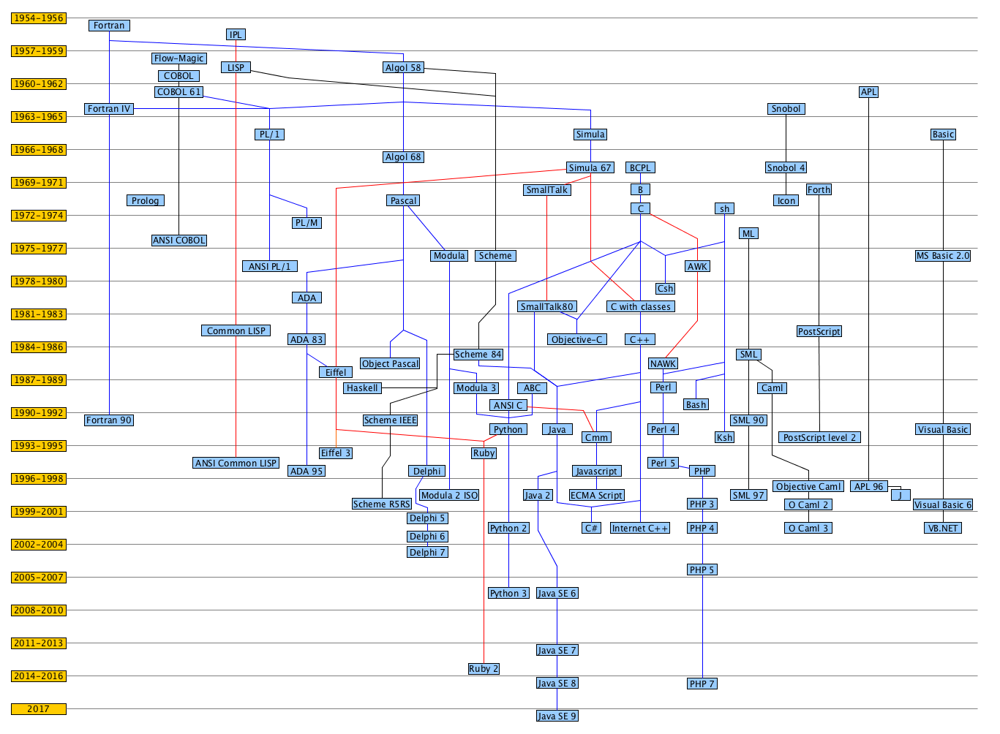

1972年，贝尔实验室的丹尼斯·里奇（Dennis Ritch）和肯·汤普逊（Ken Thompson）在开发UNIX操作系统时设计了C语言。然而，C语言不完全是里奇突发奇想而来，他是在B语言（汤普逊发明）的基础上进行设计。至于B语言的起源，那是另一个故事。C语言设计的初衷是将其作为程序员使用的一种编程工具，因此，其主要目标是成为有用的语言。
虽然绝大多数语言都以实用为目标，但是通常也会考虑其他方面。例如，Pascal的主要目标是为更好地学习编程原理提供扎实的基础；而BASIC的主要目标是开发出类似英文的语言，让不熟悉计算机的学生轻松学习编程。这些目标固然很重要，但是随着计算机的迅猛发展，它们已经不是主流语言。然而，最初为程序员设计开发的C语言，现在已成为首选的编程语言之一。
Fortran）Fortran（Formula Translation）是世界上第一个计算机高级语言，由约翰·巴克斯开发。在巴科斯大学将近毕业的时候，他参观了 IBM 计算机中心，看到当时的一台可选循序电子计算机(SSEC)，程序员们在编写程序上也是十分的艰难。在巴科斯开发了 Speedcoding 利用浮点数来支持运算的程序后，在1951年他跟他的团队开始针对汇编语言的缺点着手研究开发 FORTRAN 语言，最终在1954年正式对外发布。ALGOL）计算机硬件的快速发展，比如著名的单个体系结构计算机 UNIVAC 计算机、IBM700 系列计算机等，大量的新增计算机语言也围绕着这些计算机开始涌现，但此时的计算机语言都是专用于某一型号计算机的语言，不同计算机系统之间是无法交流。为了开发一种与计算机无关的科学用程序设计语言，德国的应用数学和力学学会(Gesellschaft für Angewandte Mathematik und Mechanik, GAMM)和国际计算机学会(Association for Computing Machinery, ACM)各有4人出席在苏黎世举行第一次设计会议，为新语言定下目标。亦因应语言特性，先被命名为国际代数语言(International Algebraic Language，IAL) ，转辗后定名为ALGOL（Algorithmic Language），即算法语言。CPL）CPL（Combined Programming Language）是基于 ALGOL 60 的高级语言，由剑桥大学推出。CPL（Combined Programming Language）是一种混合编程语言，用于嵌入式系统和科学计算领域。它结合了高级语言和汇编语言的特点，既具备高级语言的易用性和可读性，又能充分发挥汇编语言的灵活性和效率。CPL 被认为是 ALGOL 60 的一个子集，与 ALGOL 相比，CPL 增加了一些新的特性和更丰富的数据类型。BCPL）CPL语言在 ALGOL 60 的基础上接近硬件一些，但规模比较大，难以实现。英国剑桥大学的 Matin Richards 对 CPL 语言做了简化，推出了 BCPL （the Basic Combined Programming Language）语言。B）美国贝尔实验室的 Ken Thompson 以 BCPL 语言为基础，又作了进一步的简化，设计出了很简单的而且很接近硬件的 B 语言（取BCPL的第一个字母），并用B语言写出了第一个 UNIX 操作系统。但 B 语言过于简单，功能有限。B可被视为没有类型的C。NB）为了让 B 从 PDP-7 移植到 PDP-11，开发了NB（New B），这次支持了类型比如 int、char、array、pointer等等。C）语言重新命名成C。并增加了struct、&&与||运算符、预处理器和便携式IO。